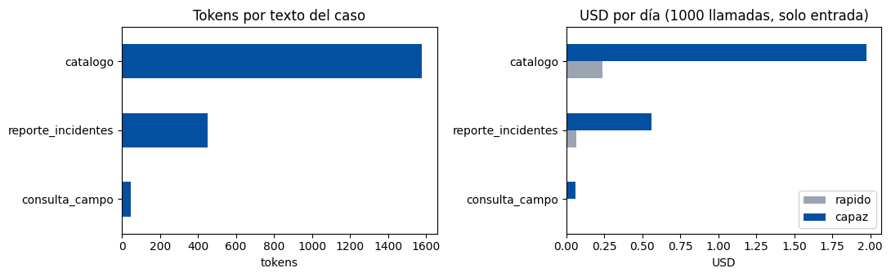
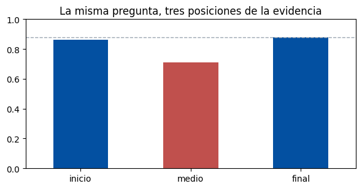
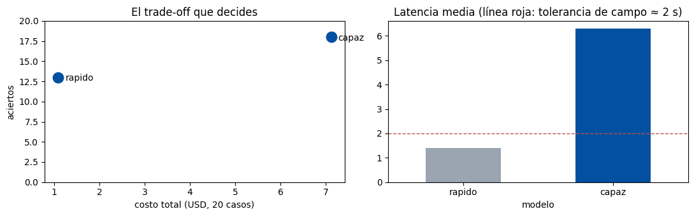

Instituto Tecnológico y de Estudios Superiores de Monterrey
Maestría en Inteligencia Artificial Aplicada
Materia: Sistemas multiagente (IA5004.10)
Actividad: Skill Lab 1 — Análisis y selección de modelos para un caso de negocio
Conjunto de datos: conjunto común LAB1-A (modo precargado)
Alumno: Oscar Alberto Ramírez Anaya
Matrícula: A01795438
Correo: A01795438@tec.mx
Repositorio: https://github.com/oscar-ramirez-anaya/SkillLab1_A01795438
Fecha de entrega: 4 de octubre de 2026
| 1. Resumen ejecutivo | {P1} |
| 2. Contexto, datos y método | {P2} |
| 3. Sección A. Tokens y costo | {P3} |
| 4. Sección B. Efecto de posición | {P4} |
| 5. Sección C. Evaluación comparativa con criterio previo | {P5} |
| 6. Sección D. Model Decision Cards | {P6} |
| 7. Conclusiones y recomendación de negocio | {P7} |
| 8. Referencias | {P8} |
Distribuidora Cuauhtémoc evalúa un asistente agéntico de inteligencia comercial para dos tareas con perfiles opuestos:
| Tarea | Quién la usa | Cuándo | Qué exige |
|---|---|---|---|
| Consulta de campo | El preventista frente a la tienda | En vivo, cientos de veces al día | Respuesta en segundos, costo bajo por llamada, errores tolerables (el humano está ahí) |
| Resumen nocturno de incidentes | El gerente comercial | Una corrida por noche, en lote | Máxima calidad de síntesis; la latencia no importa; un error llega al comité sin filtro |
Datos. Conjunto común LAB1-A del archivo skill_lab1_variants.json: conteos didácticos de tokens de tres textos, razón español/inglés, puntuaciones por posición de la evidencia y resultados agregados simulados de dos modelos ("rápido" y "capaz") en 20 casos. No se ejecutan modelos ni se llama a una API; todas las cifras son simuladas.
Método. (1) Calcular el costo de entrada por llamada y por día con las tarifas didácticas; (2) medir la caída de desempeño por posición; (3) escribir y registrar el criterio de aceptación antes de consultar la comparación de modelos; (4) aplicar el criterio sin modificarlo y documentar la decisión en una Model Decision Card por tarea. El análisis se hizo en pandas (McKinney, 2010) y matplotlib (Hunter, 2007) con el notebook del laboratorio (Tecnológico de Monterrey, 2026). El notebook ejecutado, los datos, las figuras, el registro del criterio previo y la fuente de este reporte están en https://github.com/oscar-ramirez-anaya/SkillLab1_A01795438.
Conteos didácticos del conjunto común y costo de entrada con las tarifas de referencia (rápido 0.15 USD y capaz 1.25 USD por millón de tokens), 1000 llamadas por día.
| Texto | Tokens | USD/llamada rápido | USD/día rápido | USD/llamada capaz | USD/día capaz |
|---|---|---|---|---|---|
| consulta_campo | 47 | 0.00000705 | 0.00705 | 0.00005875 | 0.05875 |
| reporte_incidentes | 449 | 0.00006735 | 0.06735 | 0.00056125 | 0.56125 |
| catalogo | 1580 | 0.00023700 | 0.23700 | 0.00197500 | 1.97500 |
Cálculo: USD/llamada = tokens x tarifa / 1,000,000; USD/día = USD/llamada x 1000. Ejemplo: 1580 x 1.25 / 1,000,000 = 0.001975 USD por llamada, 1.975 USD por día.

Razón español/inglés: 1.32. La demostración de contar_tokens dio es=20 y en=16 (razón 1.25), pero es una estimación de 4 caracteres por token, no una tokenización real como la de BPE (Sennrich et al., 2016); no la uso para costos. Los cálculos usan los conteos didácticos.
| TEXTO_QUE_NO_ENTRA_COMPLETO | catalogo |
|---|---|
| POR_QUE | El catálogo pesa 1580 tokens, 33.6 veces la consulta de campo (47 tokens): completo en cada una de las 1000 llamadas diarias costaría 1.975 USD/día solo de entrada con el capaz (0.237 USD/día con el rápido), contra 0.059 y 0.007 USD/día de la consulta. De esos 1580 tokens el preventista solo necesita los renglones del SKU y la tienda que consulta; el resto es ruido que encarece cada llamada y empuja la evidencia útil hacia el medio de la ventana (sección B), así que se recuperan solo los renglones pertinentes. |
| Posición de la evidencia | inicio | medio | final |
|---|---|---|---|
| Puntuación (0-1) | 0.86 | 0.71 | 0.88 |
Caída relativa = (máximo - medio) / máximo = (0.88 - 0.71) / 0.88 = 0.193, es decir 19 % del máximo. Frente al inicio la caída es (0.86 - 0.71) / 0.86 = 17 %. Entre inicio y final la diferencia es de solo 0.02.

El patrón coincide con lo documentado por Liu et al. (2024): los modelos aprovechan mejor la información al inicio o al final de un contexto largo y peor la que queda en medio.
Consulta de campo: se acepta un modelo solo si (1) su latencia media es <= 2.0 s (requisito duro: el preventista no espera más frente al tendero), (2) acierta al menos 15/20 casos (tasa >= 75 %), entendiendo por acierto que la respuesta cita la cifra correcta del dataset (precio, inventario o SKU) y no inventa promociones; (3) si ambos cumplen, se elige el de menor USD por acierto. Si ninguno cumple, no se acepta ninguno y se documenta. Resumen nocturno: la latencia no es requisito; se elige el modelo con más aciertos sobre 20 casos (mínimo 15/20 para aceptarlo) y, solo en empate, el de menor USD por acierto.
El criterio se registró en registrar_criterio y comprobar_criterio no detectó cambios al ejecutar evaluar.
| Modelo | Aciertos | Tasa | Costo total (USD, 20 casos) | USD por acierto | USD por caso | Latencia media (s) |
|---|---|---|---|---|---|---|
| rápido | 13/20 | 0.65 | 1.09 | 0.0838 | 0.0545 | 1.4 |
| capaz | 18/20 | 0.90 | 7.12 | 0.3956 | 0.3560 | 6.3 |

| Condición | rápido | capaz |
|---|---|---|
| Campo: latencia <= 2.0 s | Cumple (1.4 s) | No cumple (6.3 s, 3.15 veces la tolerancia) |
| Campo: aciertos >= 15/20 | No cumple (13/20) | Cumple (18/20) |
| Campo: resultado | Ninguno se acepta. Se documenta y no se reescribe el criterio (ver card de campo). | |
| Nocturno: más aciertos y >= 15/20 | 13/20, no cumple el mínimo | 18/20, se acepta |
Con la tabla enfrente es fácil fabricar un criterio a la medida. Quien prefiriera el capaz habría escrito "máximo número de aciertos" y omitido la latencia; quien prefiriera el rápido, "menor costo" y omitido el umbral de aciertos. Cualquiera de los dos "gana" con un criterio elegido después. Con el criterio previo el resultado incómodo queda a la vista: en campo ninguno cumple, y esa es la información útil para la dirección.
| Decisión | rápido (provisional) |
|---|---|
| Justificación | Decisión provisional: ningún modelo cumple el criterio previo. El rápido es el único que respeta el requisito duro de latencia (1.4 s contra 6.3 s del capaz, tolerancia 2.0 s), pero sus 13/20 aciertos (65 %) quedan debajo del umbral de 15/20. El capaz (18/20 aciertos) queda descartado por latencia, y además cuesta 0.396 USD por acierto contra 0.084 USD del rápido (4.7 veces más). En campo el humano está presente y el error es tolerable; por eso se adopta el rápido como asistente sugerido, no como respuesta autónoma, sin reescribir el criterio. |
| Riesgo residual | Con 65 % de acierto, de 1000 consultas diarias cerca de 350 podrían traer una cifra equivocada (precio, inventario o promoción). Si el preventista confía sin verificar, el error llega al pedido y al tendero. Los agregados tampoco permiten saber si los errores son cifras inventadas u omisiones. |
| Mitigación | Respuesta siempre con la cifra y su fuente (SKU y renglón del catálogo) para que el preventista la confirme; contexto acotado a los renglones pertinentes con la evidencia al inicio o al final. Muestreo semanal de 20 casos calificados contra el criterio; si en 4 semanas no se alcanzan 15/20 aciertos, revisar el contexto o evaluar un modelo intermedio que cumpla 2.0 s. Monitoreo diario de latencia (alerta si la media pasa de 2.0 s). |
| Decisión | capaz |
|---|---|
| Justificación | Cumple el criterio previo: 18/20 aciertos (90 %) contra 13/20 del rápido, es decir 2 errores por cada 20 contra 7, y un error aquí llega al comité sin filtro. Su latencia de 6.3 s es irrelevante en lote. Es una sola corrida por noche: el reporte de 449 tokens cuesta 0.00056 USD de entrada con el capaz, y aun con el costo simulado completo (7.12 USD por 20 casos, 0.356 USD por caso) el gasto diario es marginal frente al costo de un error. |
| Riesgo residual | La evaluación de 20 casos es de la tarea de campo, no de síntesis de incidentes: el 90 % no está medido para el resumen nocturno. Sigue habiendo 1 de cada 10 resúmenes con un error que el gerente podría llevar al comité. |
| Mitigación | Antes de producción, evaluar 20 resúmenes reales de incidentes contra un criterio escrito antes (incidente citado con tienda y SKU correctos, sin incidentes inventados). Después, el gerente revisa 2 resúmenes por semana contra el reporte fuente y se registra cada error; si baja de 18/20 en el muestreo mensual, se reabre la decisión. |
Control formal del notebook (validar_card): ambas cards con "Completitud formal: OK".
======================================================== RESUMEN DE RESULTADOS - LAB1-A ======================================================== 1. Tokens del catálogo: 1580 2. Razón español/inglés: 1.32 3. Score con evidencia en medio: 0.71 4. Aciertos del modelo capaz: 18/20 5. Costo total del rápido: $1.09 6. Tu decisión para campo: rapido ========================================================
Conclusión técnica. Para campo, la evidencia decisiva fue la latencia (1.4 s contra 6.3 s frente a una tolerancia de 2.0 s), que descarta al capaz aunque acierte 18/20. Para el resumen nocturno lo decisivo fue la diferencia de aciertos (18/20 contra 13/20), porque ahí la latencia no importa y el error no tiene filtro. Me sorprendieron tres cosas: ningún modelo cumple el criterio de campo; aquí pagar más no sale más barato por resultado (0.396 contra 0.084 USD por acierto); y solo reordenar el contexto vale 19 % de desempeño sin pagar un token más.
Recomendación a la dirección. Usar el modelo rápido como asistente sugerido en campo (alrededor de 54.5 USD al día por 1000 consultas según el costo simulado de la evaluación), vigilando cada semana que llegue a 15 de 20 aciertos, y el modelo capaz para el resumen nocturno (alrededor de 0.36 USD por corrida), validándolo antes con 20 resúmenes reales de incidentes.
Hunter, J. D. (2007). Matplotlib: A 2D graphics environment. Computing in Science & Engineering, 9(3), 90–95. https://doi.org/10.1109/MCSE.2007.55
Liu, N. F., Lin, K., Hewitt, J., Paranjape, A., Bevilacqua, M., Petroni, F., & Liang, P. (2024). Lost in the middle: How language models use long contexts. Transactions of the Association for Computational Linguistics, 12, 157–173. https://doi.org/10.1162/tacl_a_00638
McKinney, W. (2010). Data structures for statistical computing in Python. En S. van der Walt & J. Millman (Eds.), Proceedings of the 9th Python in Science Conference (pp. 56–61). https://doi.org/10.25080/Majora-92bf1922-00a
Sennrich, R., Haddow, B., & Birch, A. (2016). Neural machine translation of rare words with subword units. En Proceedings of the 54th Annual Meeting of the Association for Computational Linguistics (Volume 1: Long Papers) (pp. 1715–1725). Association for Computational Linguistics. https://doi.org/10.18653/v1/P16-1162
Tecnológico de Monterrey. (2026). Skill Lab 1 | Análisis y selección de modelos para un caso de negocio [Actividad, notebook skill_lab1_seleccion_modelos.ipynb y conjunto de datos skill_lab1_variants.json]. IA5004.10 Sistemas multiagente, Canvas.
Wilson, E. B. (1927). Probable inference, the law of succession, and statistical inference. Journal of the American Statistical Association, 22(158), 209–212. https://doi.org/10.1080/01621459.1927.10502953